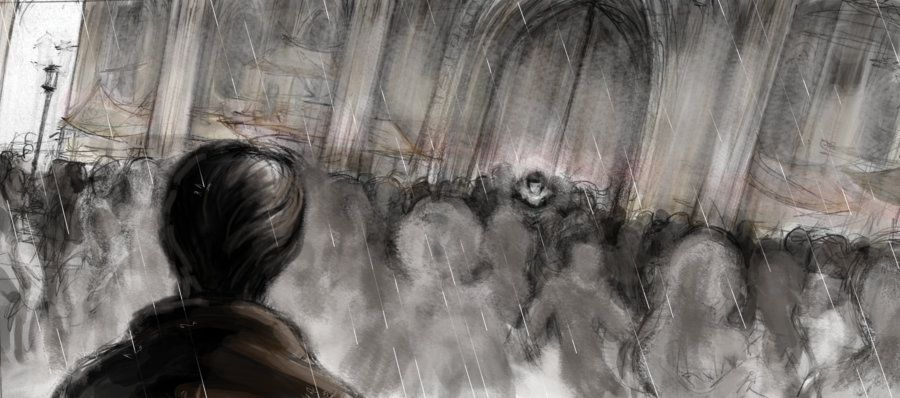

Characters
Blade Runner, directed by Ridley Scott, is brimming with symbolism. Each symbol can be correlated with the many different themes throughout the movie. Death plays a role in all of larger messages, and not surprisingly this film style is film noire. Almost every line of the movie can be expanded from it's literal meaning into a broader theme. The line with the most interesting double meaning is Leon's "Nothing is worse than an itch you can never scratch". Even with his class C intelligence rating, he has summed up Rachael's, Deckard's, and his own situation. Which is a terrible dilemma without an easy solution.
Leon knows he is facing death, but was not given the intelligence needed to fight it at the source like Roy Batty. His intelligence rating is only "C" but his strength is "A". So his solution is violence, when he was clearly failing Holden's Voight-Kampff test, he shoots Holden. There is anger in his voice "I'll tell you about my mother!" Like a three year old throwing a temper-tantrum he beats Deckard senseless. Once he knows his "expiration date" he wants to show Deckard the fear he holds. While choking Deckard, Leon states: "painful to live in fear, isn't it?" Literally death is the itch you can never scratch. His pictures are his security blanket. Roy asks him if he got his precious pictures. His design was flawed, he doesn't have the mental capacity to control his strength. It is this weakness that leads to his death.
Deckard especially is in a precarious situation. His job was to kill, upon detection, replicants. He is pressed back into service to retire Roy, Zhora, pris, and Leon. These replicants are not machines with plastic bodies, they are genetically engineered humans. Within a few short years they could develop their own memories and with memories come emotions. After the first few years there would be no detectable differences between them and humans. Bryant told Deckard: "They were designed to copy human beings in every way except their emotions. The designers reckoned that after a few years they might develop their own emotional responses. You know, hate, love, fear, envy." From the beginning the differences are so subtle that without the lengthy Voight-Kampff test, replicants could probably live their whole lives as normal humans.
Unfortunately, Deckard is the best at this unsavory job. His occupation leads him into the worst dilemma; after shooting the first replicant Zhora, Bryant adds another burden, Deckard is to execute Rachael. The complications are soon to arise, in the next scene Leon seeks revenge on Deckard. Using his superior replicant strength, Leon is about to teach Deckard about death. "Nothing is worse than an itch you can never scratch!" Leon shouts trying make Deckard see a replicant's point of view of facing a shortened life span. Rachael ends Leon's lesson with Deckard's gun. Obviously Deckard owes Rachael, a replicant, his life. Soon after Deckard complicates matters further and falls in love with Rachael. [...] "Deckard has spent his entire adult career tracking down replicants whom he has killed or arrested. All of a sudden he's falling in love with one of them. That is 'Deckard's dilemma."
Rachael too is in a predicament, when Tyrell will not see her, she doubts she is human. Deckard having looked at her file confirms that all her memories are that of Tyrell's niece. Suddenly, she is confronted with the fact everything she thought she knew is not her own. Even a picture of her childhood with her mother is faked. Confusion surrounds her, "I didn't know if I could play. I remember lessons. I don't know if it's me or Tyrell's niece." This is obviously a problem impossible to face, not knowing whose history is yours, if any at all.
For Rachael the situation gets worse, her and Deckard begin bonding emotionally. He is the hunter and she the hunted, Blade Runner and replicant. [...], "In the love scene Rachael is apprehensive because she's not sure what to do, she isn't sure if she is relying on someone else's memory." This would make anyone apprehensive, love is a such a crazy feeling from the beginning.
Leon without realization expresses everyone's situation in just one sentence. In this movie, on many occasions the characters are in impossible situations. This is one of the great qualities of this film. From a liaison between beings that should be enemies to simple lack of aptitude, Blade Runner can be read on many different levels. Of course you can always just watch it for entertainment as that is why it was created.
Written by Justin Case